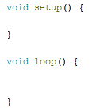

Before, I only thought that robots were items that moved around and did what they were programmed to do. Most of my definition still remains, but I now see how they don't have to move around to be robots, and a lot of day-to-day items can be considered robots. I am excited about the future of robotics because they will be able to help us tackle problems. On the other hand, I am nervous that it will end up taking up too much of the work we do, to the point where humans will no longer know how to work hard. I liked working in groups because it was quicker and easier to solve problems. However, I feel like I could improve the group work because although everybody had a say, sometimes some people ended up taking over and doing the majority of the work.
Our team worked together on the blinking LED's by planning what we wanted to program the lights to do and to what song. Then we each had a go at the coding, on our own, but asking each other questions when we needed help. Also, when one of us had already figured out a part that the other hadn't, we would show and teach it to the other. However, I guess the group work could have improved if we worked on the code together the whole time.
The basic pieces of every Arduino sketch are:

I learned that circuits are really difficult to construct and have them do what you program them to do, if you are not specific enough. Also, that you can use circuits to light up LED's and make sevrvos move when you want them to.
The MVC paradigm is a design pattern that has three parts to it: model, view, and control. It is usesd in programming languages and web frameworks to build websites.
A framework already has a template created that you follow, but in the library you have more control over what you want to do. This is called the "Inversion of Control".
I would prefer using a framework because it is easier to build a websit with since you have a set outline that helps guide you. Also, allows you to focus on unique features and characteristics you wish to incoorporate.
I would like to be at a stage that was close to the end. Maybe like the second to last one
I could also create other sites like blogs or informational websites, I think. I don't really understand the question.
I would like more practice setting up the server since that is useful with every type of website and webpage.
I don't understand anything after I learned how to activate the "myvenv". I especially don't understand the part where you had to put information into atom and transfer it to github and pythonanywhere.
Computers are good at data because they can quickly channel data to another program or wherever a user would like it to go to. Also, can create visuals or other forms of interpretation based on the data
One interesting fact about the data journalist Sandhya Kambhampati is that she worked on an investigative project in nursing homes and about employment in Germany.